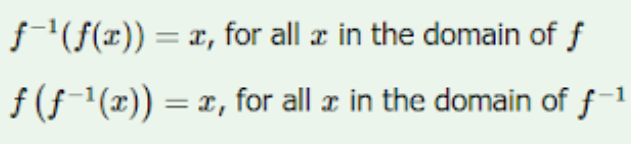
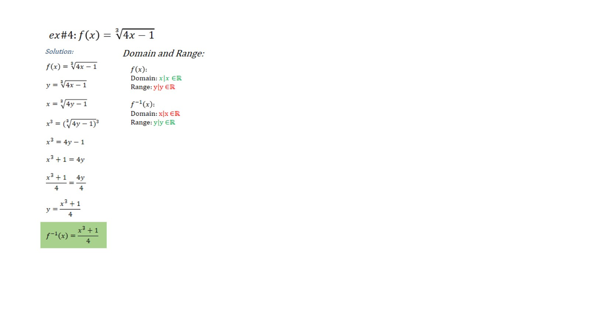
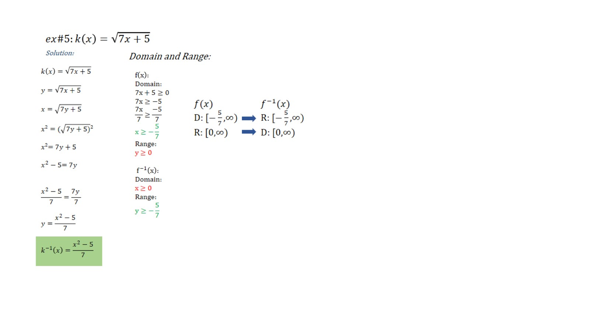
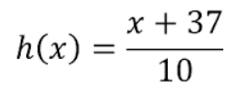

Objectives
The objective of the website is to provide a platform for students, teachers, and math enthusiasts to get resources and help on the topic of one-to-one functions and inverse functions. The purpose is to provide informative and helpful information for readers who are looking for answers and guidance. It aims to provide clear and easy-to-understand explanations of these concepts. The website also has a page dedicated to providing examples of questions and solutions, to serve as a reference for the users.
Introduction to
One-to-One Function

ONE-TO-ONE FUNCTION:
ONE-TO-ONE FUNCTION PROPERTIES:
VERTICAL LINE TEST:
If a vertical line intersects the graph in all places at exactly one point, then the relation is a function.
a passed the Vertical Line Test, while b did not.
HORIZONTAL LINE TEST
In a horizontal line test, if the line passes through the function more than once, the function fails the test and therefore isn't a one-to-one function.a passed the Horizontal Line Test, while b did not.
Examples
One-to-One Function Examples
-
Example #1
Example#1: The relation pairing each 11 STEM A1 students to their corresponding class numbers.
Solution: It is an example of a one-to-one function since each student is paired with a different class number.
-
Example #2
Example #2: Which of the following sets of values represent a one-to-one function?
Solution:
1. For the first set, f(x), we can see that each element from the right side is paired up with a unique element from the left. Hence, f(x) is a one-to-one function.
2. The set, g(x), shows a different number of elements on each side. This alone will tell us that the function is not a one-to-one function.
3. Some values from the left side correspond to the same element found on the right, so m(x) is not a one-to-one function as well.
4. Each of the elements on the first set corresponds to a unique element on the next, so n(x) represents a one-to-one function.
-
Example #3
Example #3: { ( 1,2) (3,4) (5,6) }
Solution: It is a one-to-one function since the y-values are paired up with unique x-values. -
Example #4
Example#4: { (-6,9) (7,-3) (2,1) (-8, 1) }
Solution: It is not a one-to-one function since the y-values are paired up with two different x-values. -
Example #5
Example #5: { (-2, 1) (-2,-4) (7,0) }
Solution: It is not a one-to-one function since the different y-values are paired up with the same x-value. -
Example #6
Example #6:
Solution: It is a one-to-one function since each element from the right side is paired up with a unique element from the left.
-
Example #7
Example #7:
Solution: It is not a one-to-one function since elements 8 and 9 are paired up with the same element B.
-
Example #8
Example #8:
Solution: It is a one-to-one function since it passed both the horizontal and vertical line tests.
-
Example #9
Example #9:
Solution: It is a one-to-one function since it passed both the horizontal and vertical line tests.
-
Example #10
Example #10:
Solution: f(x) is an example of a one-to-one function since elements from set B are paired with a unique element from set A. g(x) is not an example of a one-to-one function since element 4 from set B is paired up with two different elements from set A.
- Example #11
Example #11:
Determine which of the following are examples of one-to-one functions.
a. Student number of Senior High School students
b. Web page of Coca-Cola Company
c. Thumbprint of a person
d. Tutor to tutees
Solution: A and C are examples of one-to-one functions since A: Each student has a unique student number, and C: No person has the same thumbprint. B and D are not examples of one-to-one functions since B: The Coca-Cola Company has multiple web pages for different countries (ex: Coca-Cola España, Coca-Cola Philippines), and D: A tutor can have multiple tutees. - Example #11
Introduction to
Inverse Function

INVERSE FUNCTION:
An inverse function denoted by f-1(x) is the inverse form of a one-to-one function which is denoted by f(x). The Domain (A) & Range (B) becomes Domain (B) & Range (A). The inverse function can only exist if and only if the function is a one-to-one function.
SOLVING THE INVERSE OF A SET OF ORDERED PAIRS:
Example: Which of the following is the inverse of the given set of ordered pairs {(3,4), (9,6),(4,11),(5,8),(2,7)}?
Solution: The answer is c. In finding the inverse of a set of ordered pairs, simply switch the x and y variables of each pair
STEPS ON HOW TO FIND THE INVERSE OF A ONE-TO-ONE FUNCTION:
1.Write the function in the form of y = f(x)2. Interchange the x & y variables
3. Solve for the y


PROPERTIES OF AN INVERSE FUNCTION:
The two functions f x and f−1 x are inverses of each other if:
That is, f(f-1(x)) = f-1(f(x)) = x.
VERIFYING INVERSE FUNCTIONS:
We can check through the composition of functions to see if they are inverse functions. If x is the result, then the functions are inverses.
SOLVING REAL-LIFE PROBLEMS INVOLVING INVERSE FUNCTIONS:
Real-life applications of inverse function:
Several word problems should help make the concept of inverses more clear. Remember that the domain and range will be switched between the original function and its inverse.
1. Amount of money earned based on time
A painter charges a flat fee of ₱500 plus ₱250 per hour for his services.
A. Express a function that models the situation
We use the function M(h) to determine the amount of money made in h hours of work.
Therefore, M(h) = 250h + 500.
B. Find the amount of money made in 8 hours hours of work.
We apply the function with h = 8.
M(8) = 250(8) + 500 = ₱2500
C. Express the inverse, M-1, of the original function.
If we apply m = 250h + 500, we switch variables and find that M-1(h) = (h – 500) / 250
D. Use the inverse to determine how many hours were worked for the painter to make ₱2500.
Applying our inverse, we now can solve for the number of hours using M-1(2500)= (2500 – 500) / 250 = 8.
In this problem, we have the function of time(in hours) that tells us the amount of money earned, M(h) = 250h + 500.
We also have a function of money earned, the inverse, that tells us the hours needed to earn a specific amount of money, M-1(h) = (h – 500) / 250.
2. Toricelli’s Law
A tank of water holding 100 gallons will completely drain in 40 minutes. The amount of water remaining in the draining tank after a given amount of time is given by the formula:
The original function describes the volume as a function of time ( e.g. how much volume is left at a given time)
The inverse will describe the time elapsed as a function of volume (e.g. how much time has elapsed for a specific volume of water remaining)
A.How much volume is left in 20 minutes?
Applying the function for V(t) at t = 20 gives us V(20) = 25 gallons.
B.Using the inverse of the original, how long did it take for the tank to drain down to 25 gallons?
Solving for the inverse gives us:
V-1(25)= 20 minutes
3. Currency Exchange
One U.S. Dollar (USD) is approximately equal to 55.98 Philippine Pesos (PHP).
A. Express a function to describe the exchange rate from USD to PHP.
We apply the exchange rate to find that P(d) = 55.98d in PHP where d is the currency amount in dollars.
B. Express a function to describe the exchange rate from Pesos to dollars.
We use the inverse of the original function to find that P-1(d) = 0.01788d
C. Determine the amount of Pesos that can be exchanged for $250 U.S. dollars.
P(250) = 55.98(250) =₱13,995
D. Determine the amount of U.S. dollars that can be exchanged for ₱13,995.
P-1(13,995) = 0.01788(13,995) = 250.2306
The amount of U.S. dollars that can be exchanged for ₱13,995 is approximately $250.
Practice Exercises
One-to-One Function and Inverse Function
11-15: Multiple Choice
16-20: True or False
-
Exercise #1
{ ( -2, 4), (3, 7), (-2, 5), (1, 9) }
-
Exercise #2
-
Exercise #3
-
Exercise #4
{ (3,4) (-4,9) (1,7) (5,-2) }
-
Exercise #5
The relation pairing 11 STEM A1 students to their favorite subject.
-
Exercise #6
Each employee has a specific phone extension, which can only reach one employee.
-
Exercise #7
Reserved seat number in a plane to a person
-
Exercise #8
Each player in the school’s basketball team received a pair of jerseys with their respective numbers under their surnames.
-
Exercise #9
J.K. Rowling is a famous author and one of her works is the book series “Harry Potter”.
-
Exercise #10
A CEO hires only one personal assistant, and that assistant only works with the CEO.
-
Exercise #11
Determine which of the following is the inverse of the given set of ordered pairs {(7,9), (2,8), (5,1), (3,12), (4,6)}.
- a. {(9,7), (8,2), (1,5), (12,3), (6,4)}
- b. {(4,6), (3,12), (5,1), (2,8), (7,9)}
- c. {(1/7,1/9), (1/2,1/8), (1/5,1), (1/3,1/12), (1/4,1/6)}
- d. {(1/9,1/7), (1/8,1/2), (1,1/5), (1/12,1/3), (1/6,1/4)}
-
Exercise #12
Which of the following is the inverse of the function:

-
Exercise #13
Which of the following is the inverse of the function::

-
Exercise #14
A study found that the relationship between the students’ exam scores (x) and the number of hours they spent studying f(x) is given by the equation of function: . Using this information, what would Angelo’s score on the exam when he studied for approximately 4 hours and 30 minutes?
- a. 95
- b. 96
- c. 97
- d. 98
-
Exercise #15
The function defined by g(x)=5.3x converts a volume of x gallons into g(x) liters. Find the equivalent volume in gallons of a 40-liter cooking oil.
- a. 5.5
- b. 6.5
- c. 7.5
- d. 8.5
-
Exercise #16
- a. True
- b. False
-
Exercise #17
- a. True
- b. False
-
Exercise #18
- a. True
- b. False
-
Exercise #19
- a. True
- b. False
-
Exercise #20
The domain and range of the original function are the same as the domain and range of the inverse function.
- a. True
- b. False
TEAM
Our Hardworking Team
Tiongson, Eunice Angelie
LeaderAsendido, Kayezen Yael
MemberCabanatan, Kate Ashleen
MemberConcepcion, Mark Jairuz
Member
Dayrit, Dean
MemberUnit Test
One-to-One Function and Inverse Function
Test I: Multiple Choice
1.Which of the following graphs is/are an example/s of a one-to-one function?
- a. I and II
- b. II and III
- c. II only
- d. III only
2. Which of the following sets of ordered pairs is/are NOT an example of a one-to-one function?
- a. III and IV
- b. II only
- c. I and IV
- d. V only
3.Choose which example/s is/are NOT an example of a one-to-one function.

- a. I only
- b. II only
- c. All of the above
- d. None of the above
4. Choose which graph/s is/are an example of a one-to-one function.
- a. All of the above
- b. None of the above
- c. I only
- d. II only
5. Choose which example/s is/are an example of a one-to-one function.
- a. I and II
- b. II and III
- c. None of the above
- d. All of the above
6. In checking if a graph is a one-to-one function it must pass which test/s?
- a. Horizontal Line Test
- b. Vertical Line Test
- c. Horizontal Line Test and Vertical Line Test
- d. Oblique Line Test
7. It is a relationship that relates the values of one variable to the value of another variable.
- a. Function
- b. One-to-One Function
- c. Relation
- d. Inverse Function
8. Determine which of the following is an example of a one-to-one function.
- a. Student to his LRN number.
- b. The fare to the distance traveled
- c. A car model to its manufacturer company.
- d. Graph of a parabola
9. Determine which of the following is NOT an example of a one-to-one function.
- a. SSS number of an SSS member
- b. Varsity number of varsity players of the university’s volleyball team.
- c. Graph of a sine function
- d. Airport to its airport code
10. Which test did the graph not pass?
- a. Vertical Line Test
- b. Horizontal Line Test
- c. Horizontal Line Test and Vertical Line Test
- d. Oblique Line Test
11. Determine which of the following is the inverse of the function
12. Audrey and her mother are planning for a debut party. Audrey suggested that she wanted to celebrate her birthday at Jardin De Emilia Hall. The reception hall costs a flat rate of ₱2,000 and an additional rental fee of ₱50 per guest. Which of the following is the inverse of cost as a function of the number of guests?
13. Which of the following is the inverse of the function ?
14. Which of the following is the inverse of the given set of ordered pairs {(-7,5), (-2,-4),(6,-1),(8,-5),(0,9)}?
- a. {(-1/7,1/5), (-1/2,-1/4),(1/6,-1),(1/8,-1/5),(0,1/9)}
- b. {(7,-5), (2,4),(-6,1),(-8,5),(0,-9)}
- c. {(0,9),(8,-5),(6,-1),(-2,-4),(-7,5)}
- d. {(5,-7), (-2,-4),(-1,6),(-5,8),(9,0)}
15. William is charging a flat rate of ₱650 and an additional ₱60 for every hour spent on an art commission. How long did it take William to finish an art commission upon receiving ₱1730?
- a. 18 hours
- b. 16 hours
- c. 14 hours
- d. 12 hours
16. Which of the following is the inverse of the function ?
17. Andrei resides in Antipolo City, but he starts a new job in the neighboring city, QC. Every Monday, he drives his new car 90 kilometers from his residence to the office and spends the week in a company apartment. He drives back home every Friday. After 4 weeks of this routine activity, his car’s odometer shows that he has traveled 870 kilometers since he bought the car. If the mathematical model that gives the distance f(x) covered by the car as a function of x number of weeks is f(x) = 180x + 150. Find its inverse.
18. Determine the inverse of the function
19. Determine the inverse of the function
20. Google Play Music allows its members to download songs for ₱203.40 each after paying a monthly service charge of ₱762.75. Let it be represented by the function C(x)=762.75x+203.40x. Determine its inverse and how many songs can a member download with a budget of ₱4,250.
Test II: True or False
- 1. It is a one-to-one function if a horizontal line passes through a function of a graph twice.
- 2. It is a one-to-one function if each y values are paired with unique x values.
- 3. A parabola is an example of a one-to-one function.
- 4. The relation pairing a book author to her book titles is an example of a one-to-one function.
- 5. The relation pairing 700 grade 11 students to their class section is not an example of a one-to-one function.
- 6. The inverse of f(x)=10,000+150x is
- 7. This is an example of an inverse pair
- 8. The inverse of h(x)=5y+3 is
- 9. This is an example of an inverse pair
- 10. We can check through the composition of functions to see if they are inverse functions. If x is the result, then the functions are inverses.
Contact
Contact Us
Location:
938 Aurora Blvd, Cubao, Quezon City, 1109 Metro Manila
Email:
FunctionFusion@gmail.com
Call:
+639 56 127 9531